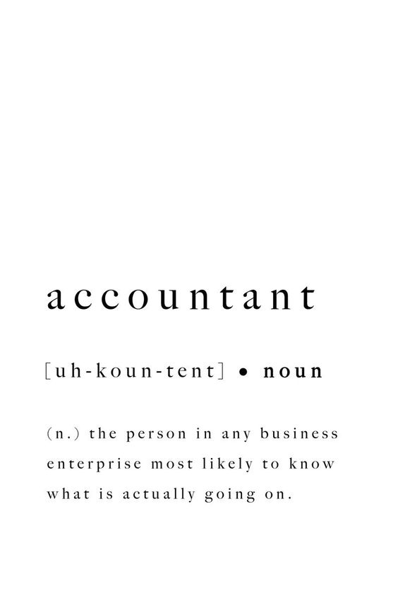
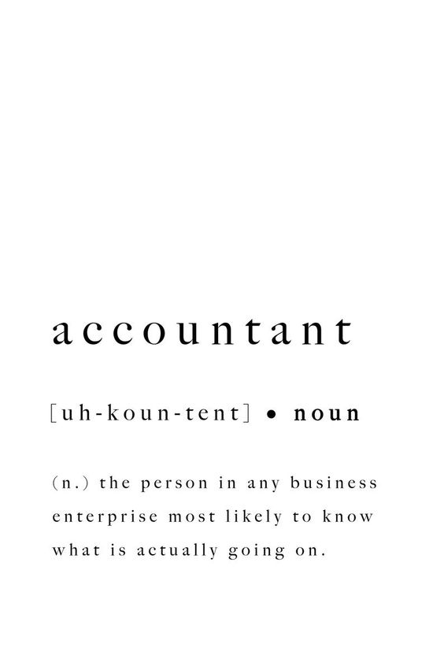

Describing Camille in A Set of Picture


Would you rather?


Logicians pride themselves on their unique perspectives and vigorous intellect. They can’t help but puzzle over the mysteries of the universe – which may explain why some of the most influential philosophers and scientists of all time have been Logicians. This personality type is fairly rare, but with their creativity and inventiveness, Logicians aren’t afraid to stand out from the crowd.
 
